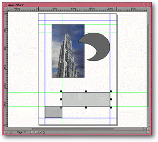

<!-- Documentation Xclamation (c)1994-2000 AXENE contact axene@axene.org>
<html>

<head>
<title>Fenêtre de document</title>
</head>

<body BGCOLOR="#FFFFFF" BACKGROUND="Images/back.gif" TEXT="#000000">

<p ALIGN="right"> </p>

<p><br>
<br>
Chaque document ouvert d'Xclamation est contenu dans une fenêtre à l'intérieur du plan
de travail . Une fenêtre de document est comparable aux fenêtres des applications sous
Unix, on peut les déplacer, les redimensionner en horizontal et en vertical, les
&quot;icônifier&quot;, les &quot;maximizer&quot; et les fermer. <br>
<br>
</p>

<hr>

<p align="center"><br>
 <br>
<small><i>Photo d'écran&nbsp;: Fenêtre de document </i></small></p>

<p><br>
</p>

<hr>

<p><br>
</p>

<p>Toutes les fenêtres de document dans Xclamation sont composées de la façon suivante
(de haut en bas et de gauche à droite)&nbsp;: 

<ol>
  <li><b>L'interface de gestion de la fenêtre</b>. Il s'agit de toute la partie qui entoure
    la fenêtre et qui, servant de décor à la fenêtre, réagit de façon standard comme
    dans tous les systèmes de multi-fenêtrage. Un document est actif si son contour est
    mauve, sinon il est gris. Toutes les opérations accessibles par les menus et les icônes
    agissent sur le document actif. Un clic sur la fenêtre d'un document non actif le rend
    actif. La barre horizontale supérieure se compose de&nbsp;: <br>
    &nbsp;<ul>
      <li> le bouton icône de <b>fermeture du document</b>. Cliquer
        sur ce bouton agit de la même manière que l'entrée &quot;<a HREF="Menu_File.html"><i>Fichier</i></a>
        / <a HREF="Menu_File.html#close_menu_entry"><i>Fermer</i></a>&quot;. <br>
        &nbsp;</li>
      <li> la <b>barre de titre</b>. Elle contient le nom du
        document tel que définit dans la boîte de dialogue '<a HREF="Box_New_Document.html#edit_document_name">Nouveau Document</a>'. Un clic sur la
        barre de titre d'un document permet de passer sa fenêtre en premier plan et de l'activer.
        Il est possible de <b>déplacer la fenêtre</b> d'un document en la prenant par cette
        barre de titre et en la relâchant à un autre endroit grâce à un clic maintenu avec le
        bouton gauche de la souris. <br>
        &nbsp;</li>
      <li> le bouton icône d'<b>icônification</b>. Un clic sur
        ce bouton fait passer la <a HREF="Main_Interface.html#document_icon">fenêtre document
        sous forme d'icône</a>. <br>
        &nbsp;</li>
      <li> le bouton icône de <b>maximisation</b>. Un clic sur
        ce bouton agrandit la fenêtre d'un document aux dimensions du plan de travail et fait
        passer celle-ci sous forme de <a HREF="Main_Interface.html#document_maximized">fenêtre
        maximale</a>. <br>
        &nbsp;</li>
    </ul>
    <p>Les bords gauche, droit et bas ainsi que les coins en bas à gauche et en bas à droite
    permettent de <b>redimensionner la fenêtre</b> à l'intérieur du plan de travail. Pour
    cela, il suffit de prendre un des bords ou un des deux coins, d'étirer la fenêtre
    horizontalement, verticalement ou en diagonale et de relâcher. <br>
    &nbsp;</p>
  </li>
  <li><b>Les règles</b>. Il y a deux <a HREF="Rulers.html">règles</a>&nbsp;: une verticale
    et une horizontale. Les règles montrent la graduation en millimètres du plan
    d'affichage. Elles peuvent être masquées ou affichées à partir du <a HREF="Menu_View.html#rulers_menu_entry">menu <i>&quot;Affichage&quot;</i></a>. <br>
    &nbsp;</li>
  <li><a NAME="view_area"><b>Le plan d'affichage</b>. C'est dans le plan d'affichage que
    s'effectue la mise en page du document. Il permet de modifier une des pages d'un document.
    Pour changer la page affichée, il faut utiliser le </a><a HREF="Pager.html">gestionnaire
    de pages</a>. On peut se déplacer dans le plan d'affichage grâce aux ascenseurs. Le
    contour de la page est représenté par un trait noir avec un ombré pour indiquer s'il
    s'agit d'une page gauche ou d'une page droite, les <a HREF="Box_New_Document.html#margins_frame">marges</a> et les <a HREF="Box_New_Document.html#sector_frame">secteurs</a> sont représentés par des traits
    bleus, les repères de règles par des traits verts et la <a HREF="Menu_View.html#grid_menu_entry">grille</a> est en magenta. <br>
    &nbsp;</li>
  <li><b>Les ascenseurs</b>. Les deux ascenseurs permettent de se déplacer dans le plan
    d'affichage en vertical et en horizontal. En fonction du facteur d'agrandissement de la
    vue dans le plan d'affichage et de la taille de la fenêtre du document, il est possible
    qu'un seul voire aucun ascenseur ne soit affiché.<br>
    &nbsp; </li>
  <li><b>Le gestionnaire de pages</b>. Le <a HREF="Pager.html">gestionnaire de pages</a>,
    permet de changer la page visible dans le plan d'affichage d'un document. <br>
    &nbsp;</li>
</ol>

<p><br>
</p>

<hr>

<p ALIGN="right"></p>
</body>
</html>
